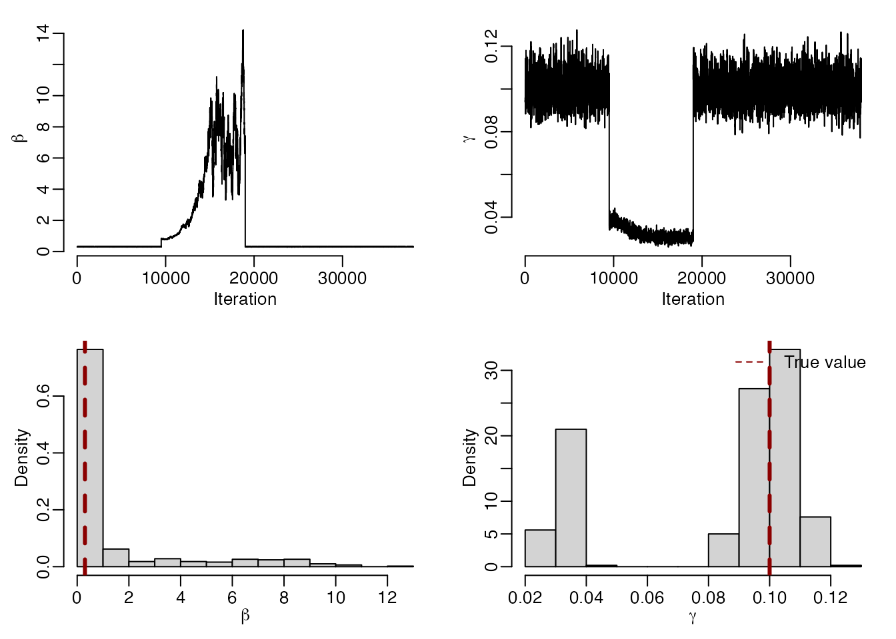
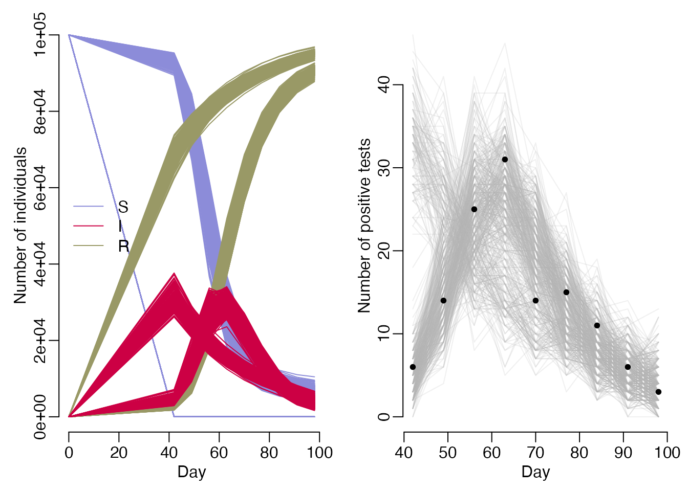

While mcstate is primarily designed to work with discrete-time stochastic models written in odin.dust, it is often possible to interact continuous-time deterministic models written in odin (subject to a few restrictions detailed in the Porting from odin vignette).
Considering a simple SIR model, as defined in the odin documentation: \[\begin{align*} \frac{dS}{dt} &= -\beta \frac{SI}{N} \\ \frac{dI}{dt} &= \beta \frac{SI}{N} - \gamma I \\ \frac{dR}{dt} &= \gamma I \\ \end{align*}\] Where \(S\) is the number of susceptibles, \(I\) is the number of infected and \(R\) is the number recovered; the total population size \(N = S + I + R\) is constant. \(\beta\) is the infection rate, \(\gamma\) is the recovery rate.
We will attempt to infer parameters \(\beta\) and \(\gamma\) using weekly measures of population prevalence, for example taken from household prevalence surveys. These have been generated using \(\beta = 0.3\) and \(\gamma = 0.1\), assuming around 100 people are sampled each week. The data contain weekly entries n_tested denoting the number of people sampled, and n_positive recording the number of those sampled who tested positive.
data <- read.csv(system.file("sir_prevalence.csv", package = "mcstate"))
par(bty = "n", mar = c(3, 3, 1, 1), mgp = c(1.5, 0.5, 0))
test_cols <- c(n_tested = "darkorange2", n_positive = "green4")
plot(data$day, data$n_tested, type = "b",
xlab = "Day", ylab = "Number of individuals",
ylim = c(0, max(data$n_tested)), col = test_cols[1], pch = 20)
lines(data$day, data$n_positive, type = "b", col = test_cols[2], pch = 20)
legend("left", names(test_cols), fill = test_cols, bty = "n")If we write our continuous-time model in the odin DSL, but compile it with odin.dust, we can use the calibration functions in mcstate to fit our model to data. In addition to the model, we include a section of code defining a likelihood function which we will use to compare model simulations to the observed data. We use a binomial likelihood:
\[ \mathrm{n_{positive}(t)} \sim \mathrm{Bin}\bigg(\mathrm{n_{tested}}(t), \frac{I(t)}{N(t)}\bigg)\] Where the probability of testing positive at time \(t\) is given by the modelled population prevalence: \(\frac{I(t)}{N(t)}\).
sir <- odin.dust::odin_dust({
## model
initial(S) <- N_init - I_init
initial(I) <- I_init
initial(R) <- 0
initial(N) <- N_init
deriv(S) <- -beta * S * I / N
deriv(I) <- beta * S * I / N - gamma * I
deriv(R) <- gamma * I
deriv(N) <- 0
beta <- user(0.4)
gamma <- user(0.2)
N_init <- user(1e5)
I_init <- user(1)
## likelihood
n_positive <- data()
n_tested <- data()
compare(n_positive) ~ binomial(n_tested, I / N)
})
#> Loading required namespace: pkgbuild
#> ℹ 21 functions decorated with [[cpp11::register]]
#> ✔ generated file cpp11.R
#> ✔ generated file cpp11.cpp
#> ℹ Re-compiling odin09707143
#> ── R CMD INSTALL ───────────────────────────────────────────────────────────────
#> * installing *source* package ‘odin09707143’ ...
#> ** using staged installation
#> ** libs
#> using C++ compiler: ‘Apple clang version 15.0.0 (clang-1500.0.40.1)’
#> using SDK: ‘’
#> clang++ -arch arm64 -std=gnu++17 -I"/Library/Frameworks/R.framework/Resources/include" -DNDEBUG -I'/Users/runner/work/_temp/Library/cpp11/include' -I/opt/R/arm64/include -I"/Users/runner/work/_temp/Library/dust/include" -DHAVE_INLINE -fPIC -falign-functions=64 -Wall -g -O2 -Wall -pedantic -fdiagnostics-color=always -c cpp11.cpp -o cpp11.o
#> clang++ -arch arm64 -std=gnu++17 -I"/Library/Frameworks/R.framework/Resources/include" -DNDEBUG -I'/Users/runner/work/_temp/Library/cpp11/include' -I/opt/R/arm64/include -I"/Users/runner/work/_temp/Library/dust/include" -DHAVE_INLINE -fPIC -falign-functions=64 -Wall -g -O2 -Wall -pedantic -fdiagnostics-color=always -c dust.cpp -o dust.o
#> dust.cpp:69:17: warning: private field 'internal' is not used [-Wunused-private-field]
#> internal_type internal;
#> ^
#> 1 warning generated.
#> clang++ -arch arm64 -std=gnu++17 -dynamiclib -Wl,-headerpad_max_install_names -undefined dynamic_lookup -L/Library/Frameworks/R.framework/Resources/lib -L/opt/R/arm64/lib -o odin09707143.so cpp11.o dust.o -F/Library/Frameworks/R.framework/.. -framework R -Wl,-framework -Wl,CoreFoundation
#> installing to /private/var/folders/sx/mf6nj_sn1ll2crpml02qjgbr0000gn/T/RtmpKbYBgH/devtools_install_148a7dbd5df3/00LOCK-file148a785bb1d2/00new/odin09707143/libs
#> ** checking absolute paths in shared objects and dynamic libraries
#> * DONE (odin09707143)
#> ℹ Loading odin09707143To calibrate the model to the data, we first need to process the data into the mcstate format. As the rate parameter is not meaningful in the context of a continuous time model, we must supply a NULL value.
sir_data <- mcstate::particle_filter_data(data = data, time = "day",
initial_time = 0, rate = NULL)
rmarkdown::paged_table(sir_data)We define a simple index function for our model, to provide meaningful parameter names:
Although we are fitting a deterministic model, to use mcstate functionality we still need to define a particle filter object. We set compare = NULL as we have defined a compiled comparison function in our model code; alternatively you can supply a compare function here if you wish (for example, if you want to use distributions not yet supported in the odin DSL), by proceeding as described in the SIR models with odin, dust and mcstate vignette.
filter <- mcstate::particle_deterministic$new(data = sir_data, model = sir,
index = index, compare = NULL)Running this filter will give us the same output as running the deterministic model:
filter$run(save_history = TRUE, pars = list())
#> [1] -74.86937
times <- c(0, data$day)
mod <- sir$new(list(), time = 0, n_particles = 1)
mod_history <- vapply(times, mod$simulate, numeric(length(mod$info()$dim)))
par(mfrow = c(1, 2), mar = c(3, 3, 1, 1), mgp = c(1.5, 0.5, 0), bty = "n")
cols <- c(S = "#8c8cd9", I = "#cc0044", R = "#999966", N = "black")
matplot(times, t(mod_history), type = "l",
xlab = "Day", ylab = "Number of individuals", col = cols, lty = 1,
main = "Model history")
legend("left", lwd = 1, col = cols, legend = names(cols), bty = "n")
matplot(times, t(drop(filter$history())), type = "l",
xlab = "Day", ylab = "", col = cols, lty = 1,
main = "Filter history")We can now perform MCMC using the Metropolis-Hastings algorithm to infer the values of \(\beta\) and \(\gamma\) from prevalence data. Let’s first describe the parameters we wish to infer, giving a minimum, maximum. For \(\gamma\) we will also apply a gamma prior with shape 1 and rate 0.2: \(\Gamma(1, 0.2)\):
beta <- mcstate::pmcmc_parameter("beta", 0.2, min = 0)
gamma <- mcstate::pmcmc_parameter("gamma", 0.1, min = 0, prior = function(p) {
dgamma(p, shape = 1, scale = 0.2, log = TRUE)
})
proposal_matrix <- diag(1e-2, 2)
mcmc_pars <- mcstate::pmcmc_parameters$new(list(beta = beta, gamma = gamma),
proposal_matrix)We can now run our MCMC, opting for 4 chains run in parallel. To speed up chain convergence, we take advantage of the adaptive proposal functionality that is available for deterministic models.
control <- mcstate::pmcmc_control(n_steps = 1e4,
n_workers = 4,
n_threads_total = 4,
n_burnin = 500,
n_chains = 4,
adaptive_proposal = TRUE,
save_state = TRUE,
save_trajectories = TRUE,
progress = TRUE, )
mcmc_run <- mcstate::pmcmc(mcmc_pars, filter, control = control)
#> Finished 40000 steps in 6 secs
mcmc_sample <- mcstate::pmcmc_sample(mcmc_run, n_sample = 500)We can visually check the chains have converged and assess the accuracy of our parameter estimates using a sample from the posterior distribution.
par(mfrow = c(2, 2), mar = c(3, 3, 1, 1), mgp = c(1.5, 0.5, 0), bty = "n")
plot(mcmc_run$pars[, "beta"], type = "l", xlab = "Iteration",
ylab = expression(beta))
plot(mcmc_run$pars[, "gamma"], type = "l", xlab = "Iteration",
ylab = expression(gamma))
hist(mcmc_sample$pars[, "beta"], main = "", xlab = expression(beta),
freq = FALSE)
abline(v = 0.3, lty = 2, col = "darkred", lwd = 3)
hist(mcmc_sample$pars[, "gamma"], main = "", xlab = expression(gamma),
freq = FALSE)
abline(v = 0.1, lty = 2, col = "darkred", lwd = 3)
legend("topright", legend = "True value", col = "darkred", lty = 2, bty = "n")
We can compare our fitted trajectories to the prevalence data by sampling from the our comparison distribution to obtain an estimate of the number of positive tests under our model.
state <- mcmc_sample$trajectories$state
prevalence <- t(state["I", , -1] / state["N", , -1])
modelled_positives <- apply(prevalence, 2, rbinom, n = nrow(data),
size = data$n_tested)
par(mfrow = c(1, 2), mar = c(3, 3, 1, 1), mgp = c(1.5, 0.5, 0), bty = "n")
matplot(times, t(state["S", , ]), type = "l", lty = 1, col = cols["S"],
ylim = c(0, max(state)), xlab = "Day", ylab = "Number of individuals")
matlines(times, t(state["R", , ]), lty = 1, col = cols["R"])
matlines(times, t(state["I", , ]), lty = 1, col = cols["I"])
legend("left", lwd = 1, col = cols[-4], legend = names(cols)[-4], bty = "n")
matplot(data$day, modelled_positives, type = "l", lty = 1, col = grey(0.7, 0.2),
xlab = "Day", ylab = "Number of positive tests")
points(data$day, data$n_positive, pch = 20)